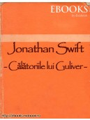
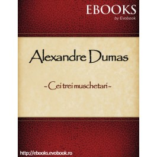
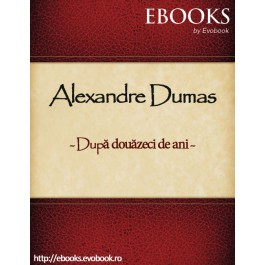
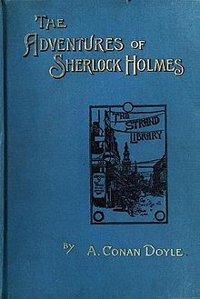

| Carti din categoria Aventura | ||||
|---|---|---|---|---|
| Numele cartii | Autor | Editura | Data aparitiei | Numar de pagini |
| Calatoriile lui Guliver | Jonathan Swift | CORINT | 28 octombrie 1726 | 128 |
| Cei trei muschetari | Alexandre Dumas | Biblioteca Adevarul | Martie-Iulie 1844 | 830 |
| Un yankeu la curtea regelui Arthur | Mark Twain | CORINT | 1889 | 195 |
| Dupa douazeci de ani | Alexandre Dumas | Biblioteca Adevarul | 1845 | 784 |
| The Adventures of Sherlock Holmes | Arthur Conan Doyle | George Newnes | 14 Octombrie 1892 | 162 |
Calatoriile lui Gulliver (engleza Gulliver's Travels) este un roman in patru parti, capodopera a scriitorului anglo-irlandez Jonathan Swift, scris sub pseudonimul de Dr. Lemuel Gulliver, in care fantezia autorului se impleteste cu o aspra satira sociala. Editorul cartii a publicat prima editie in 1726 cu numeroase modificari aduse textului original, temandu-se ca anumiti cititori ar fi fost ofensati de unele pasaje ale povestirii. O versiune integrala apare in anul 1735. Opera este pe nedrept considerata de unii, chiar si in zilele noastre, drept "literatura pentru copii", in realitate este vorba de una din cele mai semnificative creatii ale literaturii engleze din perioada de inceput a iluminismului european.
Romanul lui Dumas descrie aventurile lui d'Artagnan și ale camarazilor săi între anii 1626 și 1628, și implicarea lor în intrigile din jurul regelui Ludovic al XIII-lea, al puternicului Cardinal Richelieu, al frumoasei regine Ana de Austria, al iubitului englez al acesteia, George Villiers, Duce de Buckingham, precum și în asediul orașului La Rochelle. Acțiunile celor patru prieteni se vor intersecta și cu planurile misterioasei Milady de Winter, și ale secretarului lui Richelieu, Contele de Rochefort.
Un yankeu la curtea regelui Arthur reprezinta o incursiune fantastica in trecut. Un american tipic de la sfarsitul secolului al XIX-lea este lovit la cap intr-o incaierare, isi pierde cunostinta si se trezeste in Anglia secolului al VI-lea, langa Camelot, orasul legendarului rege Arthur. Aventurile spectaculoase ale eroului, care aplica in permanenta stiinta secolului sau la conditiile acelor vremuri indepartate, aceasta continua pendulare intre trecut si prezent care de multe ori da nastere unui savuros comic de situatie, contribuie la succesul unui roman scris cu verva si umor.

După douăzeci de ani este un roman de Alexandre Dumas tatăl. În această carte sunt povestite aventurile celor patru prieteni nedespărțiți Athos, Porthos, Aramis și d`Artagnan. Cartea este o continuare la romanul Cei trei mușchetari[1] scris de Alexandre Dumas. Acum muschetarii nu îi mai au ca dușmani pe cardinalul Richelieu, Milady de Winter sau contele de Rochefort. Ei au acum dușmani și mai mari: cardinalul Mazarin, Mordaunt (fiul lui Mylady de Winter), generalul Oliver Cromwell și chiar regina Ana de Austria.
In general the stories in The Adventures of Sherlock Holmes identify, and try to correct, social injustices. Holmes is portrayed as offering a new, fairer sense of justice. The stories were well received, and boosted the subscriptions figures of The Strand Magazine, prompting Doyle to be able to demand more money for his next set of stories. The first story, "A Scandal in Bohemia", includes the character of Irene Adler, who, despite being featured only within this one story by Doyle, is a prominent character in modern Sherlock Holmes adaptations, generally as a love interest for Holmes. Doyle included four of the twelve stories from this collection in his twelve favourite Sherlock Holmes stories, picking "The Adventure of the Speckled Band" as his overall favourite.
